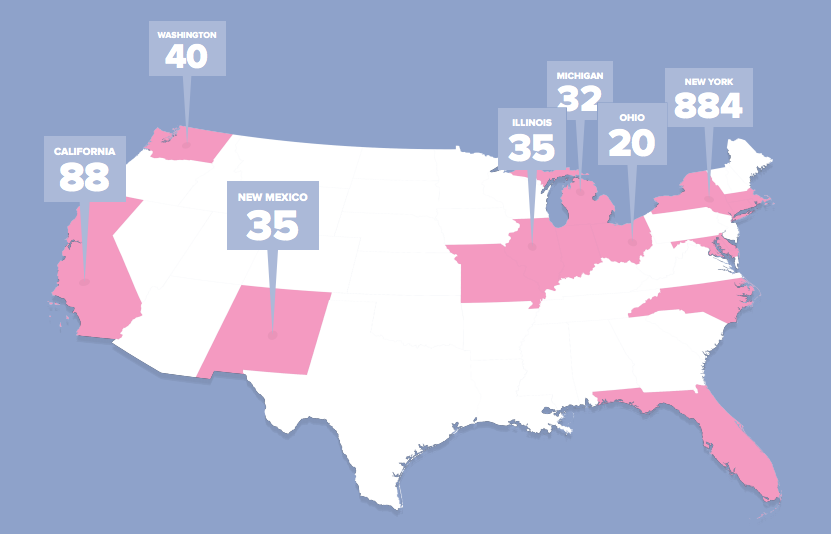

-
Learn. Coach. Share.
Change.
-
What is "Financial Development?"
Legal Advice
Financial Counseling
Self Advocacy
Financial Planning
Financial Education
Financial Literacy
Asset Building
Financial Coaching
-
Everyone experiences
financial challenges.
Astronomical student loans...
Predatory higher education institutions...
Changing job market...
Housing crisis...
Natural Disasters...
...All make it extremely difficult to be financially secure.
-
Who’s in a position to help address the overwhelming need for Financial Coaching?
Re-Entry Case
Managers
Bank and Credit
Union Staff
Human Resources
Departments
Domestic Violence
Advocates
Legal Aid
Tax
Preparers
Social Workers
College Counselors
-
We know it’s really, really, hard to talk about finances.
-
Change Machine is the solution.
-
Change Machine is the solution.
It's comprehensive. It's adaptable. It's easily customizable.
More importantly, it's based on a decade of field testing, and we know it works.
-
Change Machine is the solution.
Change Machine innovates and builds on what we know about how to improve financial security. The research shows that financial education is not enough to foster lasting change. Our financial development model has been tested in the field for more than 7 years.
Change Machine is not only a training platform and case management system, but most importantly an online community for practitioners.
-
We break Change Machine into three main areas of focus:
LEARN,
COACH,
and SHARE
-
LEARN
Change Machine helps new and experienced practitioners learn how to do financial development work.
-
LEARN
Tested and up-to-date information.
-
LEARN
Spector-specific information.
-

More than 1,000 coaches from 205 organizations are using Change Machine nationwide.
-
COACH
Change Machine helps practitioners coach their customers and track their progress.
-
COACH
Interactive data collection tools.
-
COACH
Tracks progress with Milestones to encourage customers along the way.
-
SHARE
Change Machine allows practitioners to share best practices with each other and help develop new content.
-
SHARE
Ask questions and discuss answers with fellow practitioners.
-
Join us at Change-Machine.org